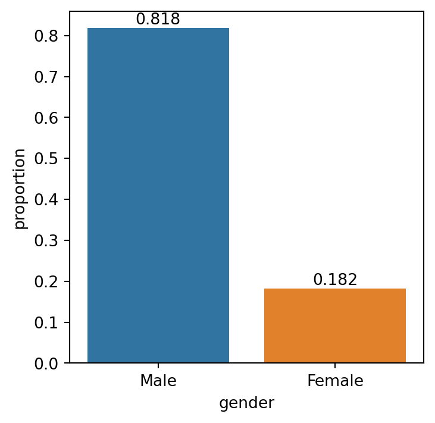
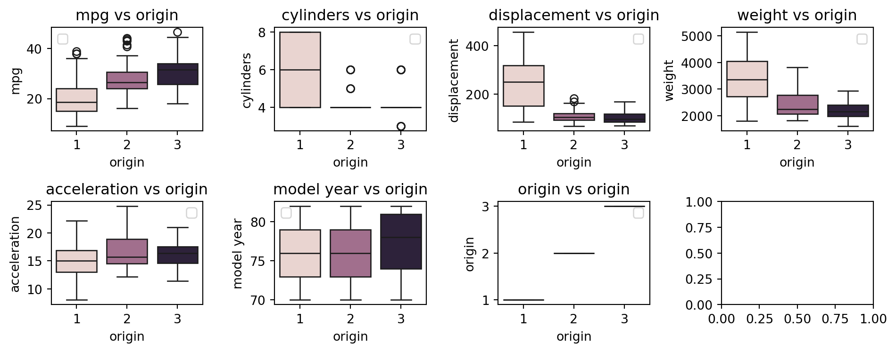

| neck (cm) | waist (cm) | height (m) | weight (kg) | |
|---|---|---|---|---|
| count | 11.00000 | 11.000000 | 11.000000 | 11.000000 |
| mean | 33.90000 | 75.663636 | 48.140000 | 60.227273 |
| std | 8.20317 | 23.492010 | 79.691223 | 12.098272 |
| min | 13.50000 | 27.000000 | 1.580000 | 49.000000 |
| 25% | 32.00000 | 66.500000 | 1.650000 | 49.500000 |
| 50% | 36.00000 | 73.000000 | 1.740000 | 58.000000 |
| 75% | 38.60000 | 81.000000 | 80.910000 | 71.000000 |
| max | 44.70000 | 115.300000 | 180.000000 | 83.000000 |
Logistic Regression
INF-604: Data Analysis

Lecturer: Dr. Sothea HAS
Outline
Motivation
Preprocessing
Binary Logistic Regression & Intuition
Applications
Motivation
Motivation
- Not all problems require us to predict
numbers! - For example:
- Is tomorrow raining or not?
- Can a certain individual pay back the loan on-time or not this month?
- Does a certain individual have a certain disease or not?
- …
- The outcomes of these problems are just
yesorno(Not number). - Such problems are called
Classification problems. - Instead of predicting
numbers, we aim at predicting whichclassan individual or data belongs to?
Motivation
Linear Regressionaims at predictingquantitativetarget. Such a problem is called Regression Problem.Logistic Regressionaims at predictingcategoricaltarget. It’s a Classification method.- Consider our survey available here: Data Collection.
- What’s wrong with this data?

Motivation
Bivariate analysis
| neck (cm) | waist (cm) | height (m) | weight (kg) | |
|---|---|---|---|---|
| neck (cm) | 1.000000 | 0.883607 | 0.541476 | 0.762261 |
| waist (cm) | 0.883607 | 1.000000 | 0.307691 | 0.795352 |
| height (m) | 0.541476 | 0.307691 | 1.000000 | 0.597656 |
| weight (kg) | 0.762261 | 0.795352 | 0.597656 | 1.000000 |
- It’s clear that
neckis linearly related withwaistsize. - It’s
weightis linearly related with bothneckandwaist. - Q1: What columns would you use to predict
gender? - A1:
Height&weightas they separategenderwell. Logistic Regressionis for predictingqualitativevariables.
Binary Logistic Regression & Intuition
Logistic Regression (LR)
Binary Logistic Regression
| x1 | x2 | y |
|---|---|---|
| -0.752759 | 2.704286 | 1 |
| 1.935603 | -0.838856 | 0 |
Code
import plotly.express as px
import plotly.graph_objects as go
fig = px.scatter(
data_toy1, x="x1", y="x2",
color="y")
# Lines
line_coefs = np.array(
[[1, 1, -2], [-1, 0.3, 0.5], [-0.5, 0.3, -1], [0.1, -1, 1]])
frames = []
x_line = np.array([np.min(x1[:,1]), np.max(x1[:,1])])
y_range = np.array([np.min(x1[:,2]), np.max(x1[:,2])])
id_small = np.argsort(np.abs(x1[:,1]) + np.abs(x1[:,2]))[5]
point_far = np.array([x_line[0], y_range[1]])
point_near = np.array([x1[id_small,1],x1[id_small,2]])
for i, coef in enumerate(line_coefs):
y_line = (-coef[0] - coef[1] * x_line) / coef[2]
a, b = -coef[1]/coef[2], -coef[0]/coef[2]
point_proj_far = np.array([(point_far[0]+a*point_far[1]-a*b)/(a**2+1), a*(point_far[0]+a*point_far[1]-a*b)/(a**2+1)+b])
point_proj_near = np.array([(point_near[0]+a*point_near[1]-a*b)/(a**2+1), a*(point_near[0]+a*point_near[1]-a*b)/(a**2+1)+b])
p1 = np.row_stack([point_far, point_proj_far])
p2 = np.row_stack([point_near, point_proj_near])
frames.append(go.Frame(
data=[fig.data[0],
fig.data[1],
go.Scatter(
x=p1[:,0],
y=p1[:,1],
name="Far from boundary",
line=dict(dash="dash"),
visible="legendonly"
),
go.Scatter(
x=p2[:,0],
y=p2[:,1],
name="Close to boundary",
line=dict(dash="dash"),
visible="legendonly"
),
go.Scatter(
x=x_line, y=y_line, mode='lines',
line=dict(width=3, color="black"),
name=f'Line: {i+1}')],
name=f'{i+1}'))
y_line = (-line_coefs[0,0] - line_coefs[0,1] * x_line) / line_coefs[0,2]
a, b = -line_coefs[0,0]/line_coefs[0,2], - line_coefs[0,1]/line_coefs[0,2]
point_proj_far = np.array([(point_far[0]+a*point_far[1]-a*b)/(a**2+1), a*(point_far[0]+a*point_far[1]-a*b)/(a**2+1)+b])
point_proj_near = np.array([(point_near[0]+a*point_near[1]-a*b)/(a**2+1), a*(point_near[0]+a*point_near[1]-a*b)/(a**2+1)+b])
p1 = np.row_stack([point_far, point_proj_far])
p2 = np.row_stack([point_near, point_proj_near])
fig1 = go.Figure(
data=[
fig.data[0],
fig.data[1],
go.Scatter(
x=p1[:,0],
y=p1[:,1],
name="Far from boundary",
line=dict(dash="dash"),
visible="legendonly"
),
go.Scatter(
x=p2[:,0],
y=p2[:,1],
name="Close to boundary",
line=dict(dash="dash"),
visible="legendonly"
),
go.Scatter(
x=x_line, y=y_line, mode='lines',
line=dict(width=3, color="black"),
name=f'Line: 1')
],
layout=go.Layout(
title="1st simulated data & boundary lines",
xaxis=dict(title="x1", range=[-3.4, 3.4]),
yaxis=dict(title="x2", range=[-3.4, 3.4]),
updatemenus=[{
"buttons": [
{
"args": [None, {"frame": {"duration": 1000, "redraw": True}, "fromcurrent": True, "mode": "immediate"}],
"label": "Play",
"method": "animate"
},
{
"args": [[None], {"frame": {"duration": 0, "redraw": False}, "mode": "immediate"}],
"label": "Stop",
"method": "animate"
}
],
"type": "buttons",
"showactive": False,
"x": -0.1,
"y": 1.25,
"pad": {"r": 10, "t": 50}
}],
sliders=[{
"active": 0,
"currentvalue": {"prefix": "Line: "},
"pad": {"t": 50},
"steps": [{"label": f"{i}",
"method": "animate",
"args": [[f'{i}'], {"frame": {"duration": 1000, "redraw": True}, "mode": "immediate",
"transition": {"duration": 10}}]}
for i in range(1,5)]
}]
),
frames=frames
)
fig1.update_layout(height=370, width=500)
fig1.show()- Objective: Given input \(\text{x}_i\in\mathbb{R}^d\), classify if \(y\in\{0,1\}\) (Male or female).
- Main idea: classify \(\Leftrightarrow\) identify decision boundary.
- Main assumption: Boundary(B) is
linear. - Model: Given input \(\text{x}_i\), the chance that it belongs to class \(1\) is given by \[\mathbb{P}(Y_i=1|X=\text{x}_i)=\sigma(\color{blue}{\beta_0}+\sum_{j=1}^d\color{blue}{\beta_j}x_{ij}),\] where \(\color{blue}{\beta_0,\beta_1,\dots,\beta_d}\in\mathbb{R}\) are the key parameters to be estiamted from the data, and \(\sigma(t)=1/(1+e^{-t}),\forall t\geq 0\).
Binary Logistic Regression
Model intuition
- Ex: Given \(\text{x}_0=[\text{h}_0,\text{w}_0]\in\mathbb{R}^2,\) for any candidate parameter \(\color{blue}{\vec{\beta}=[\beta_0,\beta_1,\beta_2]}\), \[\color{green}{z_0}=\color{blue}{\beta_0}+\color{blue}{\beta_1}\text{h}_0+\color{blue}{\beta_2}\text{w}_0\text{ is the relative distance from }\text{x}_0\to\text{ Boundary (B)}.\]
- That’s to say that
- \(\color{green}{z_0}>0\Leftrightarrow \text{x}_0\) is above the boundary.
- \(|\color{green}{z_0}|\) is large \(\Leftrightarrow\) \(\text{x}_0\) is far from the bounday.
- A good boundary should be such that:
- \(|\color{green}{z_0}|\) large \(\Rightarrow\) “certain about its class”.
- \(|\color{green}{z_0}|\) small \(\Rightarrow\) “less certain about its class”.
Binary Logistic Regression
Model intuition
- A good boundary should be such that:
- \(|\color{green}{z_0}|\) large \(\Rightarrow\) “certain about its class”.
- \(|\color{green}{z_0}|\) small \(\Rightarrow\) “less certain about its class”.
- Sigmoid function, \(\sigma:\mathbb{R}\to (0,1)\)
\[\color{green}{z}\mapsto\sigma(\color{green}{z})=\frac{1}{1+\exp(-\color{green}{z})}.\]
Key ideas
- \(\color{green}{z_0}=\color{blue}{\beta_0}+\text{x}_0^T\color{blue}{\vec{\beta}}\) is the relative distance of \(\text{x}_0\) w.r.t (B).
- Sigmoid converts this relative distance into probability.
Binary Logistic Regression
Example
- For \(\color{blue}{(\beta_0,\beta_1,\beta_2)=(1, 1, -2)}\), compute \(p(\color{blue}{1}|\text{x})\) for the data:
| x1 | x2 | y |
|---|---|---|
| 2.489186 | -0.779048 | 0 |
| -2.572868 | -1.086146 | 1 |
| 2.767143 | 2.432104 | 0 |
Compute relative distance \(z_i=\color{blue}{\beta_0}+\text{x}_i^T\color{blue}{\vec{\beta}}\), then \(p(1|\text{x}_i)\) \[\begin{align*}z_1&=1+1(2.489186)-2(-0.779048)\\ &=5.047282>0\\ \Rightarrow p(1|\text{x}_1)&=\sigma(z_1)=1/(1+e^{-5.047282})=\color{blue}{0.9936}.\\ \\ z_2&=1+1(-2.572868)-2(-1.086146)\\ &=0.599424>0\\ \Rightarrow p(1|\text{x}_2)&=\sigma(z_2)=1/(1+e^{-0.599424})=\color{blue}{0.6455}.\\ \\ z_3&=1+1(2.767143)-2(2.432104)\\ &=-1.097065 < 0\\ \Rightarrow p(1|\text{x}_3)&=\sigma(z_3)=1/(1+e^{-(-1.097065)})=\color{red}{0.2503}.\end{align*}\]
Interpretation: \(\text{x}_1,\text{x}_2\) are located above the line \((B):1+x_1-2x_2\) as \(z_1,z_2>0\) and are predicted to be in class \(\color{blue}{1}\). On the other hand, \(\text{x}_3\) is located below the line (\(z_3<0\)) and is predicted to be in class \(\color{red}{0}\).
Q4: Now,how do we find the best key parameter \(\color{blue}{\beta_0,\dots,\beta_d}\)?
We will build a criterion just like RSS in linear regression.
Binary Logistic Regression
Conditional likelihood \(\to\) Cross-entropy
- Data: \({\cal D}=\{(\text{x}_1,y_1),...,(\text{x}_n,y_n)\}\subset\mathbb{R}^d\times \{0,1\}\).
- Objective: search for \(\color{blue}{\beta_0}\in\mathbb{R},\color{blue}{\vec{\beta}}\in\mathbb{R}^d\) such that the
modelis best aligned with the data \({\cal D}\): \[p(y_i|\text{x}_i)\text{ is large for all }i\in\{1,\dots,n\}.\]
Conditional Likelihood Function: If the data are
iid, one has \[\begin{align*}{L}(\color{blue}{\beta_0},\color{blue}{\vec{\beta}})&=\mathbb{P}(Y_1=y_1,\dots,Y_n=y_n|X_1=\text{x}_1,\dots,X_n=\text{x}_n)\\ &=\prod_{i=1}^np(y_i|\text{x}_i)\\ &=\prod_{i=1}^n\Big[p(1|\text{x}_i)\Big]^{y_i}\Big[p(0|\text{x}_i)\Big]^{1-y_i}\\ &=\prod_{i=1}^n\Big[\sigma(-\color{blue}{\beta_0}-\text{x}_i^T\color{blue}{\vec{\beta}})\Big]^{y_i}\Big[(1-\sigma(-\color{blue}{\beta_0}-\text{x}_i^T\color{blue}{\vec{\beta}}))\Big]^{1-y_i}. \end{align*}\]Cross-entropy: \(\text{CEn}(\color{blue}{\vec{\beta}})=-\sum_{i=1}^n\Big[y_i\log[\sigma(-\color{blue}{\beta_0}-\text{x}_i^T\color{blue}{\vec{\beta}})]+(1-y_i)\log[(1-\sigma(-\color{blue}{\beta_0}-\text{x}_i^T\color{blue}{\vec{\beta}}))]\Big]\).
Binary Logistic Regression
Estimating coefficients
We search for coefficient \(\color{blue}{\vec{\beta}}=[\color{blue}{\beta_0,\dots,\beta_d}]\) minimizing \[\text{CEn}(\color{blue}{\vec{\beta}})=-\sum_{i=1}^n\Big[y_i\log[\sigma(-\color{blue}{\beta_0}-\text{x}_i^T\color{blue}{\vec{\beta}})]+(1-y_i)\log[(1-\sigma(-\color{blue}{\beta_0}-\text{x}_i^T\color{blue}{\vec{\beta}}))]\Big].\]
😭 Unfortunately, such minimizer values \((\color{blue}{\widehat{\beta}_0,\widehat{\vec{\beta}}})\) CANNOT be analytically computed.
😊 Fortunately, it can be numerically approximated!
We can use optimization algorithms such as Gradient Descent Algorithm to estimate the best \(\color{blue}{\hat{\beta}}\).
For more on Gradient Descent Algorithm for Logistic Regression, read here.
Binary Logistic Regression
Summary
Logistic Regression Model
- Main model: \(p(1|\text{x})=1/(1+e^{-\color{green}{z}})=1/(1+e^{-(\color{blue}{\beta_0}+\text{x}^T\color{blue}{\vec{\beta}})})\).
- Interpretation:
- Boundary decision is
Lineardefined by the coefficients \(\color{blue}{\beta_0}\) and \(\color{blue}{\vec{\beta}}\). - Probability of being in each class depends on the relative distance of that point to the boundary.
- Works well when classes are linearly separable.
- Boundary decision is
- Interpretation:

- Objective: buliding a Logistic Regression model is equivalent to searching for parameters \(\color{blue}{\beta_0}\) and \(\color{blue}{\vec{\beta}}\) that minimizes the Cross-entropy.
- The loss cannot be minimized analytically but can be minimized numerically.
Application
Logistic Regression
Application on Auto-MPG
- For our
Auto-MPGdataset, we aim at predictingoriginusing some characteristics of the cars. - Build intuition through visualization:

Logistic Regression
Application on Auto-MPG
- We predict
originusing all quantitative columns.
from sklearn.linear_model import LogisticRegression
from sklearn.model_selection import train_test_split
# Building the model
X_train, X_test, y_train, y_test = train_test_split(
df_car.select_dtypes(include="number"),
df_car[['origin']])
lgit = LogisticRegression()
lgit = lgit.fit(X_train, y_train)
# Prediction
y_pred = lgit.predict(X_test)
# Accuracy
acc = np.mean(y_pred.flatten() == y_test.to_numpy().flatten())- Accuracy = np.float64(0.78).
- Here, accuracy is defined by \[\text{Accuracy}=\frac{\text{Num. correctly predicted}}{\text{Num. observations}}.\]
Logistic Regression
Summary
- We introduce basic concept of Logistic Regression Model: \[p(1|X=\text{x})=\frac{1}{(1+e^{-\color{blue}{\beta_0}-\text{x}^T\color{blue}{\vec{\beta}}})}.\]
- The intuition of the model: the probability of being in class \(1\) depends on the relative distance from \(\text{x}\) to a linear boundary defined by \(\color{blue}{[\beta_0,\beta_1,\dots,\beta_d]}\).
- The linear boundary assumption may be too weak in practice.
- The performance of the model can be improved further by
- Selecting relevant features
- Feature engineering: polynomial transform…
- Regularization or penalty methods…
🥳 Yeahhhh….
Let’s Party… 🥂